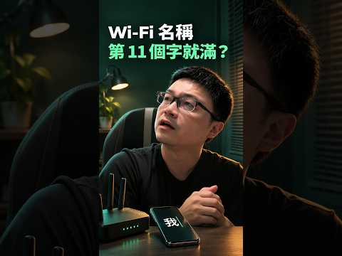

Wi-Fi 名稱最多 32 bytes：為什麼第 11 個「我」放不下？

影片封面：Wilson說給你聽；點圖前往 YouTube。
Wi-Fi 名稱長度限制的真相
許多使用者在設定路由器時，常會遇到 Wi-Fi 名稱（SSID）無法輸入超過特定字數的情況，甚至明明覺得字數不多，卻被系統強制截斷。這並非設備故障，而是源自於底層通訊協定的嚴格規範。Wi-Fi 規範中的，SSID 的最大長度為 32 個位元組（bytes）。這個限制是硬性規定，與作業系統或路由器品牌無關。理解「位元組」與「字元」的差異，是解決此問題的關鍵。
UTF-8 編碼與儲存空間計算
現代網路設備普遍採用 UTF-8 編碼來處理文字。在 UTF-8 的規則下，不同語言的字元佔用的儲存空間截然不同。半形英文字母、數字或常見符號，每個僅佔用 1 個位元組。然而，繁體中文屬於多字節字元，常見中文字通常佔用 3 個位元組，但仍需視具體字元而定。
這意味著，當你在 Wi-Fi 名稱中使用中文時，實際消耗的儲存空間會迅速增長。以影片中的案例為例，一個「我」字佔用 3 bytes。若輸入十個「我」字，總計消耗 30 bytes（10 x 3）。此時，剩餘的空間僅有 2 bytes（32 - 30 = 2）。
為什麼第 11 個字無法顯示？
當使用者試圖輸入第 11 個「我」字時，系統會嘗試佔用另外 3 bytes。然而，剩餘空間僅夠 2 bytes，這導致總長度達到 33 bytes，超過了 32 bytes 的上限。因此，設定介面可能拒絕儲存，或依裝置處理方式截斷輸入。
這就是為何明明看起來只有十幾個字，卻被判定為「太長」。若將最後一個「我」替換為兩個半形數字（如「01」），剛好各佔 1 byte，總計 32 bytes，符合 32 bytes 的長度限制，但實際仍要看設備支援的字元。這並非錯誤，而是精準的空間配置結果。
實用建議：如何優化 Wi-Fi 名稱
為了提高裝置正確識別與連線的機會，建議採取以下具體做法：
1. 優先使用半形字元：盡量使用英文字母、數字及常見符號（如 @, #, _）。這些字元佔用空間小，能容納更長的描述性文字。 2. 避免混合大量中文：若必須包含中文，請精簡字數。常見中文字通常占 3 bytes，但不同字元可能不同。 3. 測試連線相容性：部分舊型 IoT 裝置或特定作業系統對 SSID 長度處理較為嚴格。建議在設定後，使用多種設備（手機、筆電、智慧家電）實際搜尋並連線，確認無誤。 4. 簡潔命名原則：除了技術限制，過長的 SSID 也容易在公共場合暴露隱私資訊或造成混淆。建議採用「地點-功能」的簡短組合，例如「Home_5G」而非「Wilson_Smart_Home_Living_Room」。
常見問題與總結
Q: Wi-Fi 名稱真的只能有 32 個字嗎？ A: 是 32 個「位元組」（bytes），而非 32 個「字元」（characters）。若全為英文，可輸入 32 個字母；若含中文，實際可見字數會大幅減少。
Q: 為什麼我的路由器顯示名稱被截斷？ A: 可能與顯示空間、設備相容性或長度限制有關。建議檢查編碼方式，並縮短名稱長度。
總結 Wi-Fi 名稱的長度限制源於底層協定對 32 bytes 的嚴格要求。在 UTF-8 編碼下，中文字符佔用空間較大，容易觸發上限。使用者應理解位元組與字元的差異，並透過使用半形字元或精簡中文內容，提高設定的相容性。掌握此知識，能有效避免連線時的困擾。
參考影片：Wi-Fi 名稱不是最多 32 個字！為什麼第 11 個「我」就放不下？ #Shorts。文章依影片公開資訊整理，以本機 Ollama 撰寫並經編輯校對。